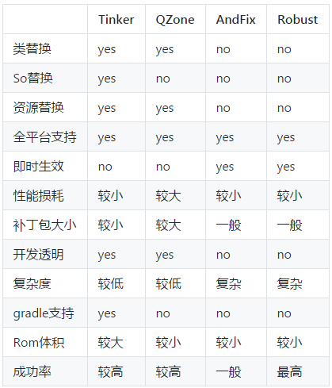
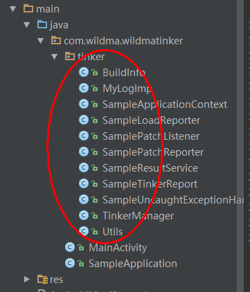
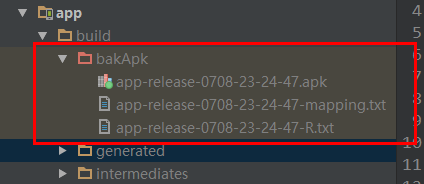
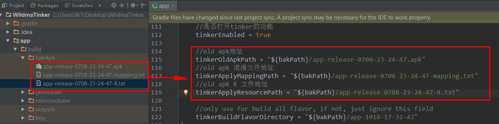
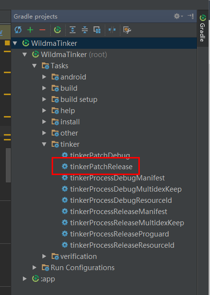
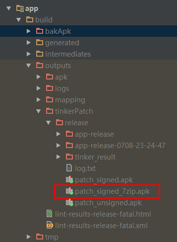

2017/09/22 更新：为了同步Tinker官方，故将github上的Demo中的Tinker版本升级到了1.8.1（不要使用1.8.0的版本，该版本不支持加固）。
前言
上个月我们的产品又更新了一个版本，当一个测试把产品上传了十几个应用市场的时候，另外一个测试突然测出一个重要bug。项目经理就说把全部渠道上传的先退回来，重新改好bug再发布。这时候我们就苦逼了，又要走一遍 签名打包->加固->签名->上传应用市场的流程。要知道我们的渠道有接近20个，整个流程又要花上2，3小时。只能全部加班加点了。。。
为了解决有一个bug又要重新发布版本的问题，项目经理就叫我赶紧把热修复集成到项目中去。一开始觉得3天就能搞定，就跟项目经理要了4天时间。结果是整整搞了5天！集成tinker Demo确实一天可以搞定，但是还要自定义Application类（我们项目的Application还比较复杂），集成美团Walle多渠道打包（我们以前多渠道打包是采用productFlavors实现的），与后台沟通接口的设计（补丁包的存放），svn的分支管理，测试整个流程等等就花了很多时间了。这其中遇到了很多坑和问题。这个系列文章都会一一讲解，新手看了肯定会少走很多弯路。
一、Tinker是什么
Tinker是微信官方的Android热补丁解决方案，它支持动态下发代码、So库以及资源，让应用能够在不需要重新安装的情况下实现更新。当然，你也可以使用Tinker来更新你的插件。
二、为什么使用Tinker
当前市面的热补丁方案有很多，其中比较出名的有阿里的AndFix、美团的Robust以及QZone的超级补丁方案。但它们都存在无法解决的问题，这也是正是我们推出Tinker的原因。

总的来说:
1、AndFix作为native解决方案，首先面临的是稳定性与兼容性问题，更重要的是它无法实现类替换，它是需要大量额外的开发成本的；
2、Robust兼容性与成功率较高，但是它与AndFix一样，无法新增变量与类只能用做的bugFix方案；
3、Qzone方案可以做到发布产品功能，但是它主要问题是插桩带来Dalvik的性能问题，以及为了解决Art下内存地址问题而导致补丁包急速增大的。
特别是在Android N之后，由于混合编译的inline策略修改，对于市面上的各种方案都不太容易解决。而Tinker热补丁方案不仅支持类、So以及资源的替换，它还是2.X－7.X的全平台支持。利用Tinker我们不仅可以用做bugfix,甚至可以替代功能的发布。Tinker已运行在微信的数亿Android设备上，那么为什么你不使用Tinker呢？
三、Tinker的已知问题
由于原理与系统限制，Tinker有以下已知问题：
1、Tinker不支持修改AndroidManifest.xml，Tinker不支持新增四大组件；
2、由于Google Play的开发者条款限制，不建议在GP渠道动态更新代码；
3、在Android N上，补丁对应用启动时间有轻微的影响；
4、不支持部分三星android-21机型，加载补丁时会主动抛出”TinkerRuntimeException:checkDexInstall failed”；
5、对于资源替换，不支持修改remoteView。例如transition动画，notification icon以及桌面图标。
四、Tinker集成
4.1 配置gradle
（1）在项目的gradle.properties文件中添加Tinker的版本号
#Tinker版本号
TINKER_VERSION=1.7.11（2）在项目的build.gradle中，添加tinker-patch-gradle-plugin的依赖
buildscript {
repositories {
jcenter()
}
dependencies {
classpath 'com.android.tools.build:gradle:2.2.2'
//tinker
classpath "com.tencent.tinker:tinker-patch-gradle-plugin:${TINKER_VERSION}"
}
}（3）在app的gradle文件app/build.gradle，添加tinker的库依赖(有注释的3个)
dependencies {
compile fileTree(include: ['*.jar'], dir: 'libs')
testCompile 'junit:junit:4.12'
compile 'com.android.support:appcompat-v7:23.1.1'
// 多dex 打包的类库
compile 'com.android.support:multidex:1.0.1'
//tinker的核心库
compile("com.tencent.tinker:tinker-android-lib:${TINKER_VERSION}") { changing = true }
//用于生成application类
provided("com.tencent.tinker:tinker-android-anno:${TINKER_VERSION}") { changing = true }
}（4）在app的gradle文件app/build.gradle，添加tinker的相关配置
下面就把整个app/build.gradle配置贴出来，其中标有Tinker相关配置即为tinker的相关配置，其中比较重要的属性都标有中文注释，其余属性解释可以自行参考 Tinker 接入指南
apply plugin: 'com.android.application'
android {
compileSdkVersion 23
buildToolsVersion "23.0.2"
//recommend Tinker相关配置
dexOptions {
jumboMode = true
}
//签名信息配置
signingConfigs {
release {
storeFile file("./keystore/wildmatinker.jks")
keyAlias "wildmatinker"
storePassword "123456"
keyPassword "123456"
}
debug {
storeFile file("./keystore/debug.keystore")
}
}
defaultConfig {
applicationId "com.wildma.wildmatinker"
minSdkVersion 14
targetSdkVersion 22
versionCode 1
versionName "1.0.0"
//Tinker相关配置start======================================
testInstrumentationRunner "android.support.test.runner.AndroidJUnitRunner"
/**
* you can use multiDex and install it in your ApplicationLifeCycle implement
*/
multiDexEnabled true
/**
* buildConfig can change during patch!
* we can use the newly value when patch
*/
buildConfigField "String", "MESSAGE", "\"I am the base apk\""
// buildConfigField "String", "MESSAGE", "\"I am the patch apk\""
/**
* client version would update with patch
* so we can get the newly git version easily!
*/
buildConfigField "String", "TINKER_ID", "\"${getTinkerIdValue()}\""
buildConfigField "String", "PLATFORM", "\"all\""
//Tinker相关配置end======================================
}
buildTypes {
release {
minifyEnabled true
signingConfig signingConfigs.release
proguardFiles getDefaultProguardFile('proguard-android.txt'), 'proguard-rules.pro'
}
debug {
debuggable true
minifyEnabled false
signingConfig signingConfigs.debug
}
}
sourceSets {
main {
jniLibs.srcDirs = ['libs']
}
}
}
dependencies {
compile fileTree(include: ['*.jar'], dir: 'libs')
testCompile 'junit:junit:4.12'
compile 'com.android.support:appcompat-v7:23.1.1'
// 多dex 打包的类库
compile 'com.android.support:multidex:1.0.1'
//tinker的核心库
compile("com.tencent.tinker:tinker-android-lib:${TINKER_VERSION}") { changing = true }
//用于生成application类
provided("com.tencent.tinker:tinker-android-anno:${TINKER_VERSION}") { changing = true }
}
//Tinker相关配置start======================================
def gitSha() {
try {
// String gitRev = 'git rev-parse --short HEAD'.execute(null, project.rootDir).text.trim()
String gitRev = '1.0.0' //tinkerID,每次发布新版本都需要修改!
if (gitRev == null) {
throw new GradleException("can't get git rev, you should add git to system path or just input test value, such as 'testTinkerId'")
}
return gitRev
} catch (Exception e) {
throw new GradleException("can't get git rev, you should add git to system path or just input test value, such as 'testTinkerId'")
}
}
def javaVersion = JavaVersion.VERSION_1_7
def bakPath = file("${buildDir}/bakApk/")
/**
* you can use assembleRelease to build you base apk
* use tinkerPatchRelease -POLD_APK= -PAPPLY_MAPPING= -PAPPLY_RESOURCE= to build patch
* add apk from the build/bakApk
*/
ext {
//是否打开tinker的功能
tinkerEnabled = true
//old apk地址
tinkerOldApkPath = "${bakPath}/app-release-0708-21-59-49.apk"
//old apk 混淆文件地址
tinkerApplyMappingPath = "${bakPath}/app-release-0708-21-59-49-mapping.txt"
//old apk R 文件地址
tinkerApplyResourcePath = "${bakPath}/app-release-0708-21-59-49-R.txt"
//only use for build all flavor, if not, just ignore this field
tinkerBuildFlavorDirectory = "${bakPath}/app-1018-17-32-47"
}
def getOldApkPath() {
return hasProperty("OLD_APK") ? OLD_APK : ext.tinkerOldApkPath
}
def getApplyMappingPath() {
return hasProperty("APPLY_MAPPING") ? APPLY_MAPPING : ext.tinkerApplyMappingPath
}
def getApplyResourceMappingPath() {
return hasProperty("APPLY_RESOURCE") ? APPLY_RESOURCE : ext.tinkerApplyResourcePath
}
def getTinkerIdValue() {
return hasProperty("TINKER_ID") ? TINKER_ID : gitSha()
}
def buildWithTinker() {
return hasProperty("TINKER_ENABLE") ? TINKER_ENABLE : ext.tinkerEnabled
}
def getTinkerBuildFlavorDirectory() {
return ext.tinkerBuildFlavorDirectory
}
if (buildWithTinker()) {
apply plugin: 'com.tencent.tinker.patch'
tinkerPatch {
/**
* necessary，default 'null'
* the old apk path, use to diff with the new apk to build
* add apk from the build/bakApk
*/
oldApk = getOldApkPath()
/**
* optional，default 'false'
* there are some cases we may get some warnings
* if ignoreWarning is true, we would just assert the patch process
* case 1: minSdkVersion is below 14, but you are using dexMode with raw.
* it must be crash when load.
* case 2: newly added Android Component in AndroidManifest.xml,
* it must be crash when load.
* case 3: loader classes in dex.loader{} are not keep in the main dex,
* it must be let tinker not work.
* case 4: loader classes in dex.loader{} changes,
* loader classes is ues to load patch dex. it is useless to change them.
* it won't crash, but these changes can't effect. you may ignore it
* case 5: resources.arsc has changed, but we don't use applyResourceMapping to build
*/
ignoreWarning = false
/**
* optional，default 'true'
* whether sign the patch file
* if not, you must do yourself. otherwise it can't check success during the patch loading
* we will use the sign config with your build type
*/
useSign = true
/**
* optional，default 'true'
* whether use tinker to build
*/
tinkerEnable = buildWithTinker()
/**
* Warning, applyMapping will affect the normal android build!
*/
buildConfig {
/**
* optional，default 'null'
* if we use tinkerPatch to build the patch apk, you'd better to apply the old
* apk mapping file if minifyEnabled is enable!
* Warning:
* you must be careful that it will affect the normal assemble build!
*/
applyMapping = getApplyMappingPath()
/**
* optional，default 'null'
* It is nice to keep the resource id from R.txt file to reduce java changes
*/
applyResourceMapping = getApplyResourceMappingPath()
/**
* necessary，default 'null'
* because we don't want to check the base apk with md5 in the runtime(it is slow)
* tinkerId is use to identify the unique base apk when the patch is tried to apply.
* we can use git rev, svn rev or simply versionCode.
* we will gen the tinkerId in your manifest automatic
*/
tinkerId = getTinkerIdValue()
/**
* if keepDexApply is true, class in which dex refer to the old apk.
* open this can reduce the dex diff file size.
*/
keepDexApply = false
//是否开启加固
isProtectedApp = false
}
dex {
/**
* optional，default 'jar'
* only can be 'raw' or 'jar'. for raw, we would keep its original format
* for jar, we would repack dexes with zip format.
* if you want to support below 14, you must use jar
* or you want to save rom or check quicker, you can use raw mode also
*/
dexMode = "jar"
/**
* necessary，default '[]'
* what dexes in apk are expected to deal with tinkerPatch
* it support * or ? pattern.
*/
pattern = ["classes*.dex",
"assets/secondary-dex-?.jar"]
/**
* necessary，default '[]'
* Warning, it is very very important, loader classes can't change with patch.
* thus, they will be removed from patch dexes.
* you must put the following class into main dex.
* Simply, you should add your own application {@code tinker.sample.android.SampleApplication}
* own tinkerLoader, and the classes you use in them
*
*/
loader = [
//use sample, let BaseBuildInfo unchangeable with tinker
"tinker.sample.android.app.BaseBuildInfo"
]
}
lib {
/**
* optional，default '[]'
* what library in apk are expected to deal with tinkerPatch
* it support * or ? pattern.
* for library in assets, we would just recover them in the patch directory
* you can get them in TinkerLoadResult with Tinker
*/
pattern = ["lib/*/*.so"]
}
res {
/**
* optional，default '[]'
* what resource in apk are expected to deal with tinkerPatch
* it support * or ? pattern.
* you must include all your resources in apk here,
* otherwise, they won't repack in the new apk resources.
*/
pattern = ["res/*", "assets/*", "resources.arsc", "AndroidManifest.xml"]
/**
* optional，default '[]'
* the resource file exclude patterns, ignore add, delete or modify resource change
* it support * or ? pattern.
* Warning, we can only use for files no relative with resources.arsc
*/
ignoreChange = ["assets/sample_meta.txt"]
/**
* default 100kb
* for modify resource, if it is larger than 'largeModSize'
* we would like to use bsdiff algorithm to reduce patch file size
*/
largeModSize = 100
}
packageConfig {
/**
* optional，default 'TINKER_ID, TINKER_ID_VALUE' 'NEW_TINKER_ID, NEW_TINKER_ID_VALUE'
* package meta file gen. path is assets/package_meta.txt in patch file
* you can use securityCheck.getPackageProperties() in your ownPackageCheck method
* or TinkerLoadResult.getPackageConfigByName
* we will get the TINKER_ID from the old apk manifest for you automatic,
* other config files (such as patchMessage below)is not necessary
*/
configField("patchMessage", "tinker is sample to use")
/**
* just a sample case, you can use such as sdkVersion, brand, channel...
* you can parse it in the SamplePatchListener.
* Then you can use patch conditional!
*/
configField("platform", "all")
/**
* patch version via packageConfig
*/
configField("patchVersion", "1.0")
}
//or you can add config filed outside, or get meta value from old apk
//project.tinkerPatch.packageConfig.configField("test1", project.tinkerPatch.packageConfig.getMetaDataFromOldApk("Test"))
//project.tinkerPatch.packageConfig.configField("test2", "sample")
/**
* if you don't use zipArtifact or path, we just use 7za to try
*/
sevenZip {
/**
* optional，default '7za'
* the 7zip artifact path, it will use the right 7za with your platform
*/
zipArtifact = "com.tencent.mm:SevenZip:1.1.10"
/**
* optional，default '7za'
* you can specify the 7za path yourself, it will overwrite the zipArtifact value
*/
// path = "/usr/local/bin/7za"
}
}
List<String> flavors = new ArrayList<>();
project.android.productFlavors.each {flavor ->
flavors.add(flavor.name)
}
boolean hasFlavors = flavors.size() > 0
def date = new Date().format("MMdd-HH-mm-ss")
/**
* bak apk and mapping
*/
android.applicationVariants.all { variant ->
/**
* task type, you want to bak
*/
def taskName = variant.name
tasks.all {
if ("assemble${taskName.capitalize()}".equalsIgnoreCase(it.name)) {
it.doLast {
copy {
def fileNamePrefix = "${project.name}-${variant.baseName}"
def newFileNamePrefix = hasFlavors ? "${fileNamePrefix}" : "${fileNamePrefix}-${date}"
def destPath = hasFlavors ? file("${bakPath}/${project.name}-${date}/${variant.flavorName}") : bakPath
from variant.outputs.outputFile
into destPath
rename { String fileName ->
fileName.replace("${fileNamePrefix}.apk", "${newFileNamePrefix}.apk")
}
from "${buildDir}/outputs/mapping/${variant.dirName}/mapping.txt"
into destPath
rename { String fileName ->
fileName.replace("mapping.txt", "${newFileNamePrefix}-mapping.txt")
}
from "${buildDir}/intermediates/symbols/${variant.dirName}/R.txt"
into destPath
rename { String fileName ->
fileName.replace("R.txt", "${newFileNamePrefix}-R.txt")
}
}
}
}
}
}
project.afterEvaluate {
//sample use for build all flavor for one time
if (hasFlavors) {
task(tinkerPatchAllFlavorRelease) {
group = 'tinker'
def originOldPath = getTinkerBuildFlavorDirectory()
for (String flavor : flavors) {
def tinkerTask = tasks.getByName("tinkerPatch${flavor.capitalize()}Release")
dependsOn tinkerTask
def preAssembleTask = tasks.getByName("process${flavor.capitalize()}ReleaseManifest")
preAssembleTask.doFirst {
String flavorName = preAssembleTask.name.substring(7, 8).toLowerCase() + preAssembleTask.name.substring(8, preAssembleTask.name.length() - 15)
project.tinkerPatch.oldApk = "${originOldPath}/${flavorName}/${project.name}-${flavorName}-release.apk"
project.tinkerPatch.buildConfig.applyMapping = "${originOldPath}/${flavorName}/${project.name}-${flavorName}-release-mapping.txt"
project.tinkerPatch.buildConfig.applyResourceMapping = "${originOldPath}/${flavorName}/${project.name}-${flavorName}-release-R.txt"
}
}
}
task(tinkerPatchAllFlavorDebug) {
group = 'tinker'
def originOldPath = getTinkerBuildFlavorDirectory()
for (String flavor : flavors) {
def tinkerTask = tasks.getByName("tinkerPatch${flavor.capitalize()}Debug")
dependsOn tinkerTask
def preAssembleTask = tasks.getByName("process${flavor.capitalize()}DebugManifest")
preAssembleTask.doFirst {
String flavorName = preAssembleTask.name.substring(7, 8).toLowerCase() + preAssembleTask.name.substring(8, preAssembleTask.name.length() - 13)
project.tinkerPatch.oldApk = "${originOldPath}/${flavorName}/${project.name}-${flavorName}-debug.apk"
project.tinkerPatch.buildConfig.applyMapping = "${originOldPath}/${flavorName}/${project.name}-${flavorName}-debug-mapping.txt"
project.tinkerPatch.buildConfig.applyResourceMapping = "${originOldPath}/${flavorName}/${project.name}-${flavorName}-debug-R.txt"
}
}
}
}
}
}
//Tinker相关配置end======================================4.2 自定义Application类
程序启动时会加载默认的Application类，这导致补丁包无法对它做修改。所以Tinker官方说不建议自己去实现Application，而是由Tinker自动生成。即需要创建一个SampleApplication类，继承DefaultApplicationLike，然后将我们自己的MyApplication中所有逻辑放在SampleApplication中的onCreate中。最后需要将我们项目中之前的MyApplication类删除。如下：
package com.wildma.wildmatinker;
import android.annotation.TargetApi;
import android.app.Application;
import android.content.Context;
import android.content.Intent;
import android.os.Build;
import android.support.multidex.MultiDex;
import com.tencent.tinker.anno.DefaultLifeCycle;
import com.tencent.tinker.lib.tinker.Tinker;
import com.tencent.tinker.lib.tinker.TinkerInstaller;
import com.tencent.tinker.loader.app.DefaultApplicationLike;
import com.tencent.tinker.loader.shareutil.ShareConstants;
import com.wildma.wildmatinker.tinker.MyLogImp;
import com.wildma.wildmatinker.tinker.TinkerManager;
@SuppressWarnings("unused")
@DefaultLifeCycle( application = "com.wildma.wildmatinker.MyApplication",// 自定义生成
flags = ShareConstants.TINKER_ENABLE_ALL,
loadVerifyFlag = false)
public class SampleApplication extends DefaultApplicationLike {
public static SampleApplication sampleApplication;
public SampleApplication(Application application, int tinkerFlags, boolean tinkerLoadVerifyFlag,
long applicationStartElapsedTime, long applicationStartMillisTime, Intent tinkerResultIntent) {
super(application, tinkerFlags, tinkerLoadVerifyFlag, applicationStartElapsedTime, applicationStartMillisTime, tinkerResultIntent);
}
@Override
public void onCreate() {
super.onCreate();
sampleApplication = this;
//将我们自己的MyApplication中的所有逻辑放在这里，例如初始化一些第三方
}
@TargetApi(Build.VERSION_CODES.ICE_CREAM_SANDWICH)
@Override
public void onBaseContextAttached(Context base) {
super.onBaseContextAttached(base);
// 其原理是分包架构，所以在加载初要加载其余的分包
MultiDex.install(base);
// Tinker管理类，保存当前对象
TinkerManager.setTinkerApplicationLike(this);
// 崩溃保护
TinkerManager.initFastCrashProtect();
// 是否重试
TinkerManager.setUpgradeRetryEnable(true);
//Log 实现，打印加载补丁的信息
TinkerInstaller.setLogIml(new MyLogImp());
// 运行Tinker ，通过Tinker添加一些基本配置
TinkerManager.installTinker(this);
Tinker tinker = Tinker.with(getApplication());
}
@TargetApi(Build.VERSION_CODES.ICE_CREAM_SANDWICH)
public void registerActivityLifecycleCallbacks(Application.ActivityLifecycleCallbacks callback) {
// 生命周期，默认配置
getApplication().registerActivityLifecycleCallbacks(callback);
}
/**
* 获取SampleApplication实例
* @return
*/
public static SampleApplication getSampleApplication(){
return sampleApplication;
}
}
其中DefaultLifeCycle中的MyApplication为我们真正的Application，清单文件中的Application的name改为MyApplication的全路径。如下：
<application
android:name="com.wildma.wildmatinker.MyApplication"
android:allowBackup="true"
android:icon="@mipmap/ic_launcher"
android:label="@string/app_name"
android:supportsRtl="true"
android:theme="@style/AppTheme">
<activity android:name=".MainActivity">
<intent-filter>
<action android:name="android.intent.action.MAIN"/>
<category android:name="android.intent.category.LAUNCHER"/>
</intent-filter>
</activity>
</application>4.3 添加Tinker相关类
这些类主要是加载补丁包过程的回调，打印log，崩溃保护等。具体见 Tinker 自定义扩展

4.4 在清单文件添加读写sd卡的权限
<uses-permission android:name="android.permission.READ_EXTERNAL_STORAGE"/>
<uses-permission android:name="android.permission.WRITE_EXTERNAL_STORAGE"/>4.5 加载补丁包代码
package com.wildma.wildmatinker;
public class MainActivity extends AppCompatActivity {
@Override
protected void onCreate(Bundle savedInstanceState) {
super.onCreate(savedInstanceState);
setContentView(R.layout.activity_main);
//加载补丁包
TinkerInstaller.onReceiveUpgradePatch(getApplicationContext(), Environment.getExternalStorageDirectory().getAbsolutePath() + "/patch_signed_7zip");
}
//Tinker相关配置
protected void onResume() {
super.onResume();
Utils.setBackground(false);
}
//Tinker相关配置
@Override
protected void onPause() {
super.onPause();
Utils.setBackground(true);
}
}
其中第9行代码的路径为我们放在sd卡中的补丁包路径。
五、测试Tinker热修复
这里只讲release版本。
（1）按正常流程打包出带签名的APK，并装到手机上
打包完成，会自动在项目的app/build文件夹下生成bakAPK文件夹并有三个文件（基础包的一些文件），如图：

（2）将上面的三个文件路径复制到app.build中对应的位置，如图

（3）修复bug（测试的时候随便改动一点代码）
（4）运行补丁命令获取补丁包
运行补丁命令，单击AS右侧顶部gradle–>双击tinkerPatchRelease，如图:
(也可以直接在Android studio中的Terminal中输入命令gradlew tinkerPatchRelease)

运行完成会在build->outputs->tinkerPatch->release文件夹中生成一个名为patch_signed_7zip.apk的补丁包，如图：

（5）将该补丁包复制到之前加载补丁包中对应的SD卡路劲即可。
注意：该补丁包需要重新命名，不要以.apk结尾，因为有些运营商会挟持以.apk结尾的资源，名字要与之前加载补丁包的名字相同，例如Demo中命名为patch_signed_7zip。
（6）运行项目发现bug并没有修复，因为tinker是不支持即时修复的，关掉APP重启。恭喜你！bug已修复！
注意事项：
Tinker集成在这里讲的已经非常详细了，有不足的地方希望指出。遇到不懂的问题都可以直接在博客下评论问我，只要我遇到过并且能回答出来的都会乐意回答。
Demo下载地址：https://github.com/wildma/WildmaTinker
如果对你有帮助请点赞，star支持下哈~